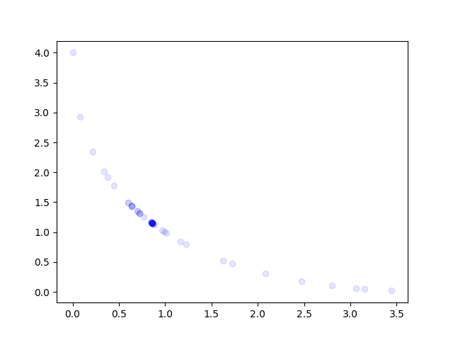

Note
Click here to download the full example code
Simple Multi-Objective¶
__copyright__ = "Copyright 2021, AutoML.org Freiburg-Hannover"
__license__ = "3-clause BSD"
import numpy as np
from ConfigSpace.hyperparameters import UniformFloatHyperparameter
from matplotlib import pyplot as plt
from smac.configspace import ConfigurationSpace
from smac.facade.smac_bb_facade import SMAC4BB
from smac.scenario.scenario import Scenario
def schaffer(x):
f1 = np.square(x)
f2 = np.square(np.sqrt(f1) - 2)
return f1, f2
def plot(all_x):
plt.figure()
for x in all_x:
f1, f2 = schaffer(x)
plt.scatter(f1, f2, c="blue", alpha=0.1, zorder=3000)
plt.vlines([1], 0, 4, linestyles="dashed", colors=["red"])
plt.hlines([1], 0, 4, linestyles="dashed", colors=["red"])
plt.show()
def plot_from_smac(smac):
rh = smac.get_runhistory()
all_x = []
for (config_id, _, _, _) in rh.data.keys():
config = rh.ids_config[config_id]
all_x.append(config["x"])
plot(all_x)
def tae(cfg):
f1, f2 = schaffer(cfg["x"])
return {"metric1": f1, "metric2": f2}
if __name__ == "__main__":
MIN_V = -2
MAX_V = 2
# Simple configspace
cs = ConfigurationSpace()
cs.add_hyperparameter(UniformFloatHyperparameter("x", lower=MIN_V, upper=MAX_V))
# Scenario object
scenario = Scenario(
{
"run_obj": "quality", # we optimize quality (alternatively runtime)
"runcount-limit": 50, # max. number of function evaluations
"cs": cs, # configuration space
"multi_objectives": "metric1, metric2",
"limit_resources": False,
}
)
smac = SMAC4BB(
scenario=scenario,
rng=np.random.RandomState(5),
tae_runner=tae,
)
incumbent = smac.optimize()
# Plot the evaluated points
plot_from_smac(smac)
Total running time of the script: ( 0 minutes 36.540 seconds)